zukin_clip.mp4 — 54.96s, 23 detected segments. Red outline = part of a proposed shot.
| Stage | Name | Start | End | Len |
|---|---|---|---|---|
| intro | aerial_orbit | 9.12 | 12.88 | 3.76 |
| intro | ground_yard | 12.88 | 15.40 | 2.52 |
| intro | sign | 16.90 | 18.60 | 1.70 |
| journey | walkin | 16.90 | 27.24 | 10.34 |
| journey | hall_wide | 27.24 | 29.68 | 2.44 |
| journey | table_setting | 30.72 | 33.32 | 2.60 |
| journey | ceiling | 37.36 | 40.92 | 3.56 |
| journey | stage | 40.92 | 43.84 | 2.92 |
| journey | aisle | 46.16 | 47.80 | 1.64 |
| journey | closing_aerial | 51.20 | 53.60 | 2.40 |
| # | Start | End | Len | Frame | Used as |
|---|---|---|---|---|---|
| 1 | 0.00 | 1.68 | 1.68 | 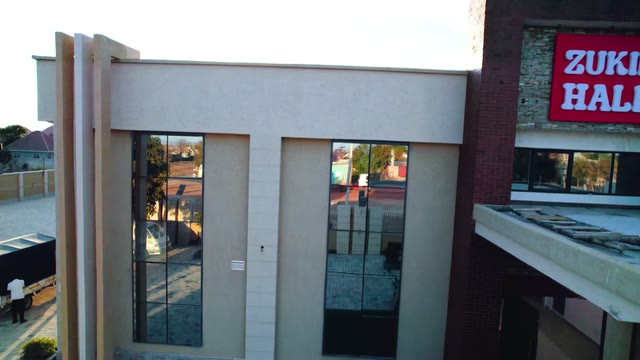 | — |
| 2 | 1.68 | 2.64 | 0.96 | — | |
| 3 | 2.64 | 3.96 | 1.32 | 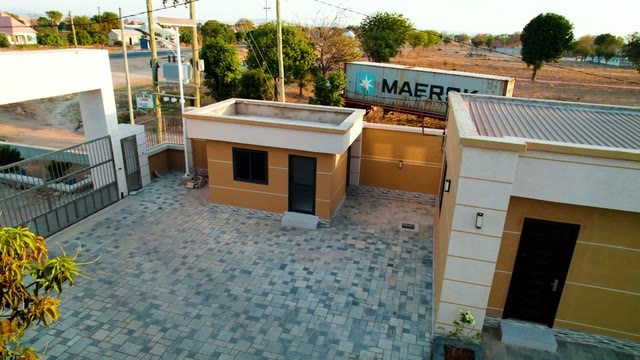 | — |
| 4 | 3.96 | 4.96 | 1.00 | 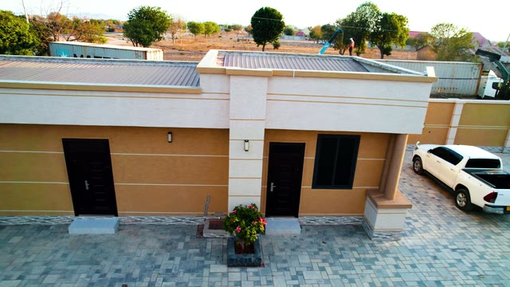 | — |
| 5 | 4.96 | 6.20 | 1.24 | 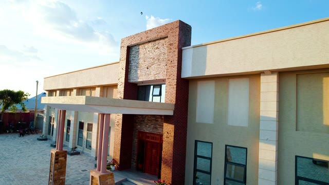 | — |
| 6 | 6.20 | 7.12 | 0.92 | — | |
| 7 | 7.12 | 9.12 | 2.00 | 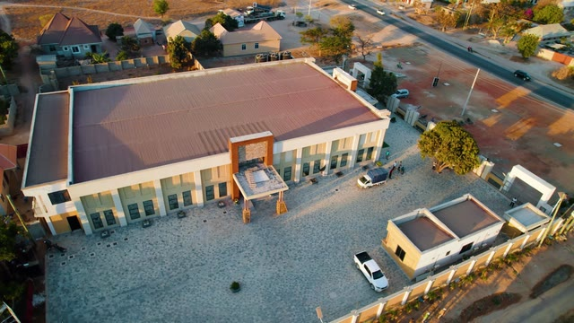 | — |
| 8 | 9.12 | 12.88 | 3.76 | 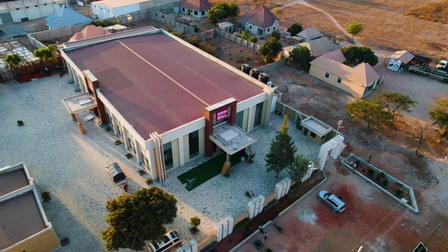 | aerial_orbit |
| 9 | 12.88 | 15.40 | 2.52 | 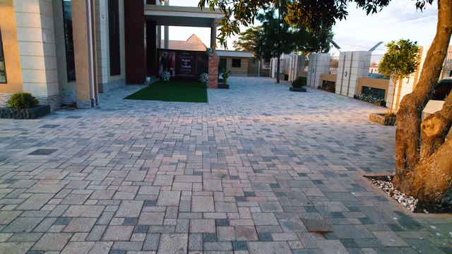 | ground_yard |
| 10 | 15.40 | 16.76 | 1.36 | 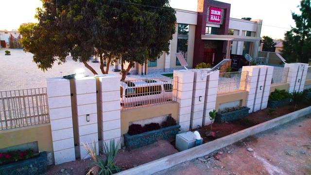 | — |
| 11 | 16.76 | 27.24 | 10.48 | sign, walkin | |
| 12 | 27.24 | 29.68 | 2.44 | 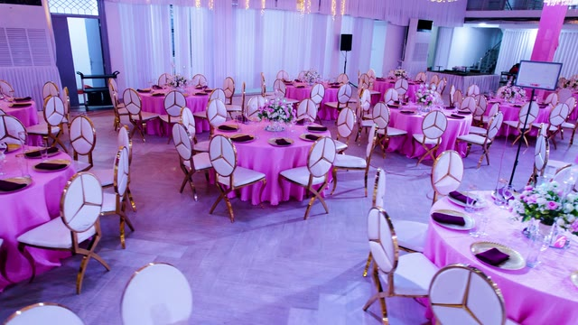 | hall_wide |
| 13 | 29.68 | 30.72 | 1.04 | 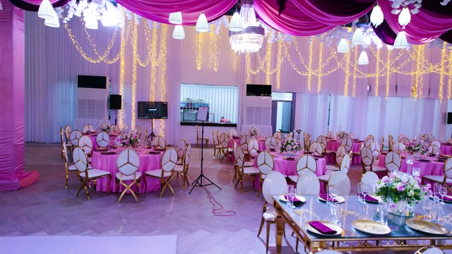 | — |
| 14 | 30.72 | 32.36 | 1.64 | table_setting | |
| 15 | 32.36 | 33.32 | 0.96 | table_setting | |
| 16 | 33.32 | 35.84 | 2.52 | — | |
| 17 | 35.84 | 37.36 | 1.52 | — | |
| 18 | 37.36 | 40.92 | 3.56 | ceiling | |
| 19 | 40.92 | 43.84 | 2.92 | 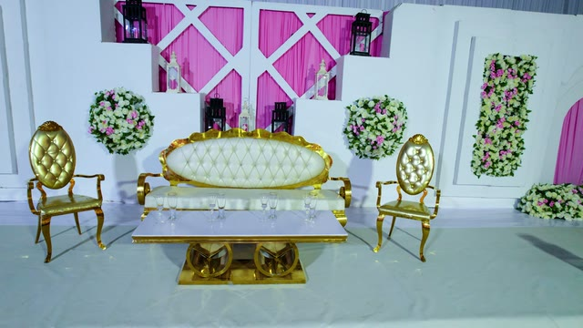 | stage |
| 20 | 43.84 | 46.16 | 2.32 | — | |
| 21 | 46.16 | 47.80 | 1.64 | aisle | |
| 22 | 47.80 | 51.20 | 3.40 | 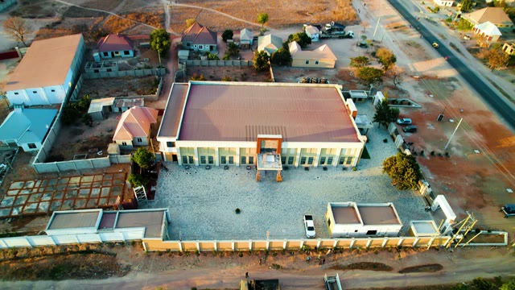 | — |
| 23 | 51.20 | 54.96 | 3.76 | 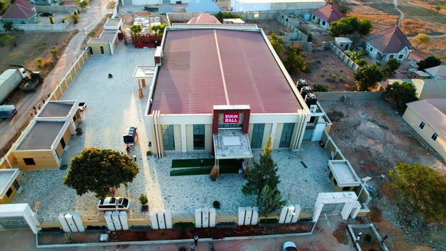 | closing_aerial |
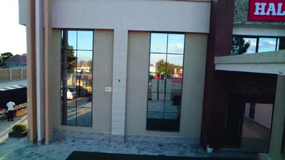
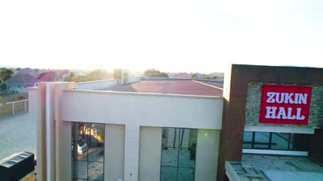
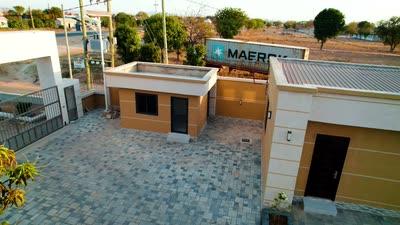
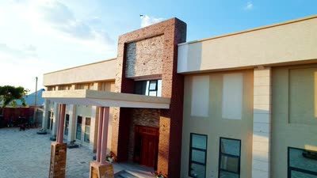
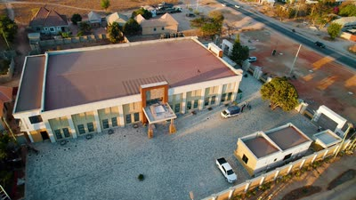
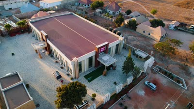
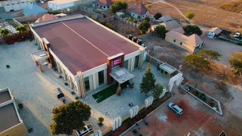
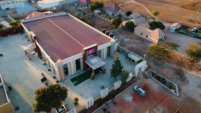
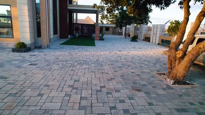
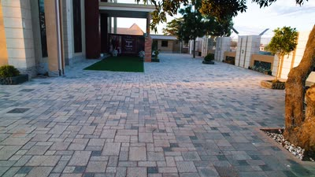
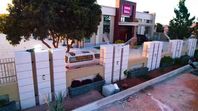
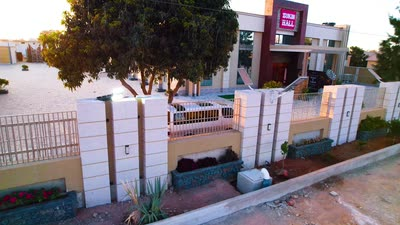
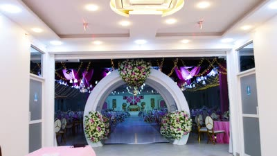
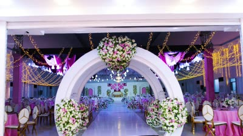
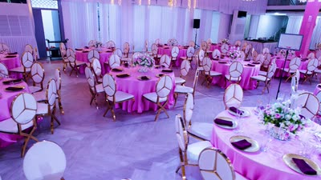
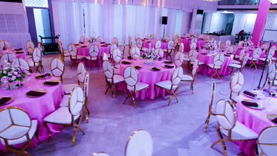
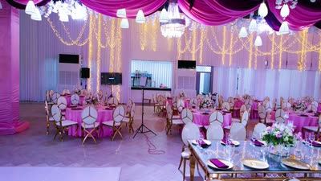
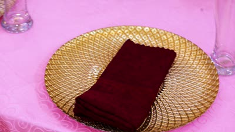
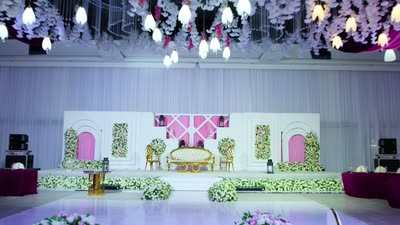
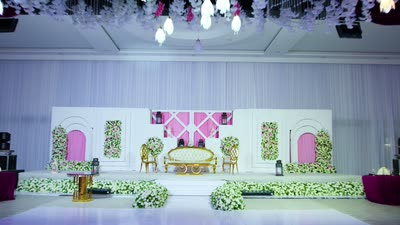
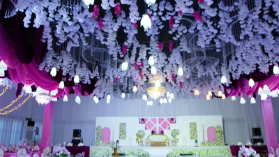
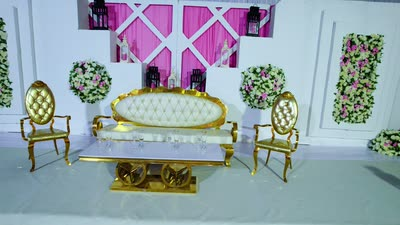
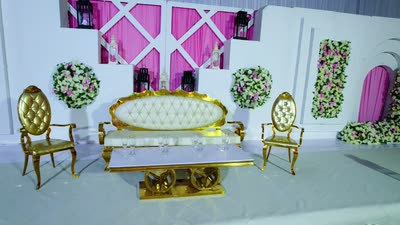
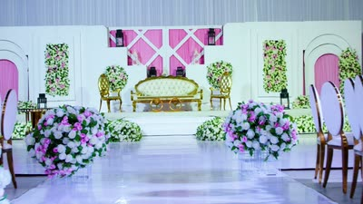
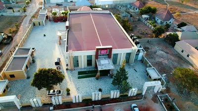
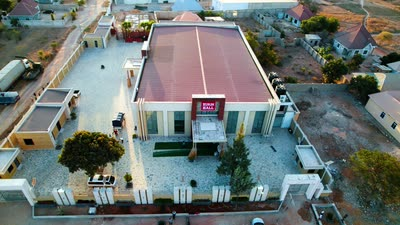
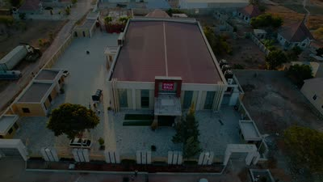